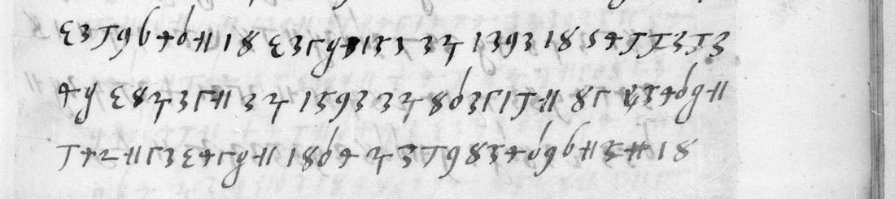

01 The letter and the key
The letter is no. 69 of fr. 3034, one of the Montmorency volumes of Italian despatches. It fills ff. 156r–157v. The salutation, the closing (D. V. Ill.ma Ex.tia … sig.ria) and the signature (Humil.e Ser.or Ambrosio Bizozola) are in clear, and everything else is in cipher. The address is on the following leaf: Allo Ill.mo et Ex.mo Principe Il S. Maximiliano Sforza … patron suo osser.mo … In Franza, Ala Corte. DECODE dates it 1520/1529. The clear parts carry no date. The cipher does: the last lines read Bologna, quattro del … novembre, and the letter describes the eve of the Emperor’s entry into the town. Charles V entered Bologna on 5 November 1529, so the letter is of 4 November 1529. The year is inferred, not written.
Lasry’s table gives one sign for each letter: A ʒ, B 7, C a 9 with a tail, D 1, E ꝗ, F ʃ, G 2, H 6, I 8, L ʓ, M ε, N Γ, O 11, P a tall cross, Q Ꝗ, R a T-shaped stroke, S ɗ, T and V two further signs. Words are separated by spaces. The text adds four refinements. A long-looped sign that is not drawn in the table as published stands for t, as molte, intese and rotta require. ʒ is used for u as well as a (aolte = volte, daca = duca). The long s is used for f and for s (fatti, consiglio). In the postscript a small cross stands for e. Lasry’s “unknown” ꝏ occurs only at the ends of lines, where a word runs on (al duca ꝏ / di Savoia), so it is a filler. Two or three other unknown signs occur only in the date line and are probably its numerals.
02 The reading
f. 156r, normalised; square brackets mark stretches not yet secure.
Per le mie ultime di Cremona et far[..] [ꝏ] e de qui [..] intese molte cose de le actione de misere [..] i figli[..], come sono passato li [..] con lo imperatore, et che molte volte si è misso ogni cosa in rotta. Qua ho saputo per uno omo degno di fede che per questi rumori che il consiglio del imperatore più volte hanno fatti di grandi discorsi sopra il ducato [..], dicendo che [..] Francesco [..] uno altro [..] di fare molte parte dil stato: al duca [ꝏ] di Savoia, al marchese di Monferrato, al marchese di Mantua, al duca di Ferrara, et Milano al duca Alisandro; in questo ragionamento dise l’arciepiscopo di Baro: meglio io seria darlo al duca Maximiliano, che di ragione li viene …
(f. 156v, ll. 13–17) … domane sarà l’intrata. Non di meno oggi li è andato incontra tutti li cardinali et ambassatori; quello di Venecia et de Milano hanno parlato [a] Sua Maiestà cossì a cavallo.
(postscript, f. 157v) Sono molti giorni non ho vostre littere; avere il recepto di questa …
The rest of f. 156v weighs whether Duke Francesco would have to be satisfied and what his brother should have, and says that the writer has written to the Pope. f. 157r concerns “misere Iulio”, a negotiation together with the Venetians, waiting to see whether the duke will come, Trivulzio, and the promise of a cardinal’s hat. f. 157v hopes that the affair of misere Iulio will pass into the Pope’s power, mentions ten thousand scudi of income a year, and ends with the date line. The decoder output, line by line, is reading_raw.txt in the repository.
In English, f. 156r: “By my last from Cremona … Here I have learned from a man worthy of faith that the Emperor’s council has several times held great discussions about the duchy … of making many parts of the state: to the Duke of Savoy, to the Marquis of Monferrato, to the Marquis of Mantua, to the Duke of Ferrara, and Milan to the duke …; in this discussion the Archbishop of Bari said … I believe that if this were done, Duke Francesco would have to be satisfied …”

03 Method
A grep of Tomokiyo’s saved page for “3034” turned up the section and Lasry’s key image. The Gallica SRU query dc.source adj "Français 3034" returned the volume, and a contact sheet of views 240–251 located the letter. The full-resolution natives were cut into lines by a horizontal ink projection. Each line was transcribed by eye into shape codes (codes.txt), and decode.py applied the key. The homophones listed above came from words that the plain table left one letter off.
04 What remains
- The numerals in the date line (f. 157v ll. 9–10): three signs with no second occurrence.
- About 35 signs in four lines (listed in
doubtful.txt) that do not resolve on the Gallica scan. - Confirmation: Sanuto’s Diarii for November 1529 should record the partition talk and the ambassadors’ meeting with the Emperor.
05 Sources
- BnF, Français 3034, ff. 156–158: Gallica btv1b90600370, views 246–251.
- DECODE R4224 (images behind login).
- George Lasry, key table “BNF Francais 3034-156 Italian”, 5 November 2023, shown on S. Tomokiyo, cryptiana, GL.htm.
Transcription, key notes and decoder: bizozola1520/ in the repository.